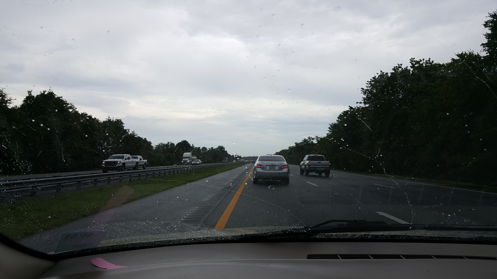
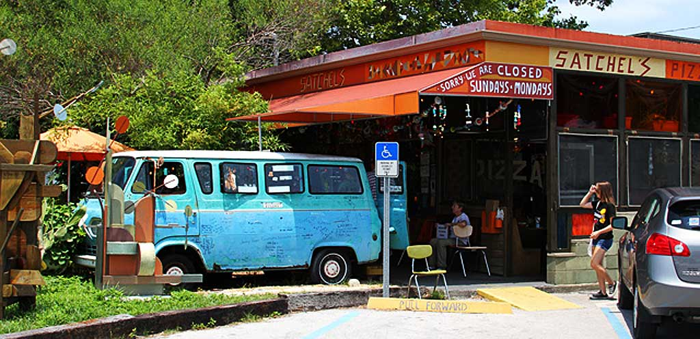
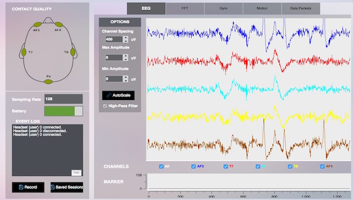
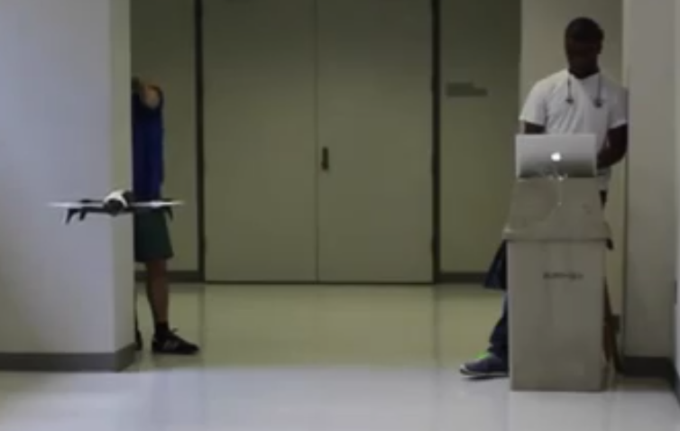
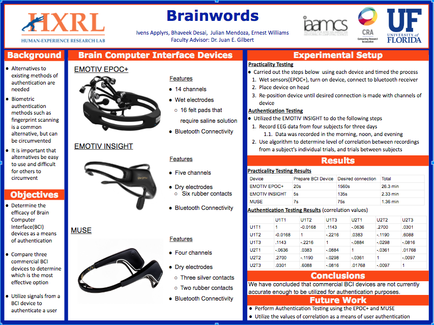
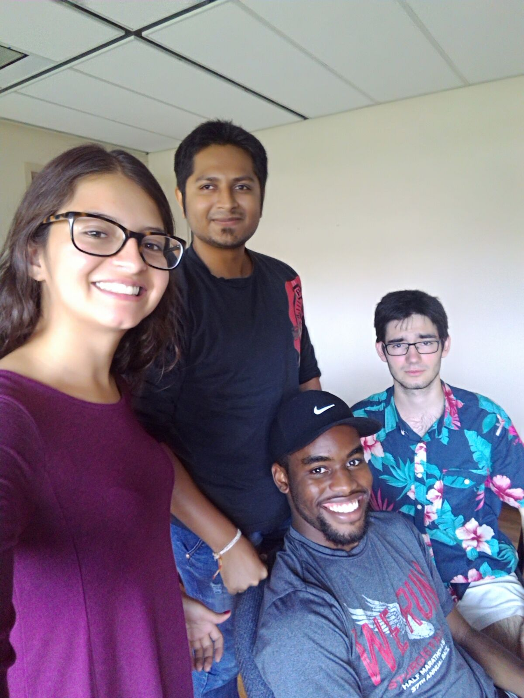

Journal for DREU 2016
Week 1: May 30 - June 5


{kind=link}
{kind=link}
My first week of the DREU program started with a five hour drive from Augusta, GA. After getting my keys and pulling everything out of my car, I got food and slept because I was too tired to do anything else. The next few days, I got the chance to the University of Florida to get acquanted with campus and the people I will be working with this summer. Both the campus and the people are really nice.
The project I am working on is called Brainwords. The idea behind it is that we want to be able to determine if brainwaves can be used as a means to authenticate a user for a system. This system could be anything from signing onto your computer, to a Google account. If possible, we want to determine how effective it is, and observe the best way to implement it. This touches on information I have learn in an Introduction to Cybersecurity course I took last semester, so I'm glad to get started.
Finally, I wanted to see what Gainseville had to offer. First, I decided to just drive around the city without navigation to see what I would come across. This turned up a couple sights that are shown in my pictures. Second, I got a list of places I should visit from one of my teammates, and started researching to see where I should go first. I chose to go to Lake Wauberg where I got the chance to kyak for the first time. I thought I would flip over, but a sign saying "DANGER ALLIGATORS" and eyes peeking out of the water motivated me to stay in my kayak. In short, I enjoyed my first week.
Week 2: June 6 - June 12
{kind=link}
{kind=link}
{kind=link}
During my second week of the program I decided that I wanted to get as much experience working with BCI devices as I could. With this in mind, I also started working with the Brain Drone Racing team. This also gave me the chance to fly drones which was is a good plus. So far, we have been able to fly the drone using a team member's EEG signals. Completing this has allowed us to identify areas in the existing system that can be improved upon.
- Line Following: The DJI Phantom is supposed to use it's camera to follow a red line to keep it from veering during flight. This does not work well.
- Latency Issues: There has been some noteable lag between when a command is pressed and when the drone receives this command.
- Drone Choice: It may be useful to change the chosen drone. The Parrot Bebop Drone has been tested and has the ability to hover much better than the DJI Phantom 3.
In regards to the Brainwords project, we determined that the most effective way to proceed was to begin testing with team members to determine which EEG device should be used for further Testing purposes from the following devices.
- EMOTIV Epoc: 16 Channel EEG Device Notes: Large amount of channels provides potentially more accurate signals, but is more cumbersome to put on. Has provided API to process data.
- EMOTIV Insight: 7 Channel EEG Device Notes: Smaller amount of channels makes it easier to wear the headset, but may not provide an accurate amount of data. Has provided API to process data.
- MUSE: 5 Channel EEG Device Notes: Smallest amount of channels that is very comfortable to wear. Smaller channels may not provide enough data for accurate identification. Does not have existing API to process data.
On Thursday, I flew from Gainseville, FL to my second home formerly known as Atlanta, GA to attend the first National Society for Blacks in Computing conference. I was made aware of this conference by my faculty advisor Dr. Juan Gilbert. This conference was hosted at the Twelve Hotel in Atlantic Station. From Thursday to Saturday evening, I had the opportunity to meet and hear from great people with the aim of improving the presence of blacks with PhDs in computing fields. This conference included life coaching, interview preparation, tips on funding graduate school, and tips choosing the best graduate school for you. This program provided with a lot of information and a great network that will help me greatly in the future.
Week 3: June 13 - June 19
During my third week of the research program, I got the chance to test two EEG devices with the team: the Emotiv Epoc and Emotiv Insight. In testing these devices, we wanted to see if we would be able to get noticeable similarities in EEG patterns when performing the task of counting down from 10 to 1 following a screen prompt. These similarities were observed based on visual representations of EEG data shown in Emotiv's Test Bench. This observation resulted in data that showed that data from the Epoc was unreliable. this could be due to an inability to get a good amount of consistent connections with the channels of the Epoc. This observation also provided us with the impression that the Insight will provide more accurate data. This can be attributed to the increased level of ease to make connections with the channels on this device. However, we have not been able to get all channels on the Insight to connect. Also, while Ivens was able to get very similar waverforms while performing a task, I was not. More testing will allow us to determine if this happens consistently.
This week we also decided on four stimuli that we wanted to use that would allow the user to complete some thinking task and produce EEG signals.
- Task 1: Listen to animals sounds, and determine which animals you hear.
- Task 2: Watch an image of a countdown, and count from 10 - 1.
- Task 3: Watch a video of Michael Jackson moonwalking, and count the number of steps.
- Task 4: Look at the image of the controversial black and blue dress, and think of what colors you see.
On Thursday, I drove back home to Augusta to check on my grandmother who had spent some time in the hospital before I started them REU program. I enjoyed the time I had to spend with family and see my grandmother get better.
Week 4: June 20 - June 26
During my fourth week of the DREU program I got the chance to attempt the work with Muse. The Muse is meant to connect to a computer or cell phone via bluetooth before signals can be transmitted. I attempted to make this connection both with my laptp running Mac OSX and my Android phone running Marshmallow. I was not able to get the Muse to pair properly with either of these devices. Ivens also attempted to pair this device and was not successful. He was able get the device to pair with a device running Linux.
This week I also got the chance to work with the Drone team. This team has decided to split into two and work towards getting the Parrout Bebop 2 drone to work with the Brain Drone Race Setup. This would allow us to connect a laptop directly to the drone and fly it using key commands. This is more effective than the DJI setup which currently requires signals to be sent to a webserver that then sends the signals down to an android device running an Android application. This setup could provide a significant amount of latency issues.
On Tuesday, I got the chance to go out to eat at a pizza place called Satchel's which has a very interesting theme. There is even a van outside that you can sit in. Everyone at the table got large Calzones which tasted great. On Thursday, the University of Florida officially got the ability to have PhDs in Human Center Computing.
Week 5: June 27 - July 3

During my fifth week of the DREU program I worked to utilize MATLAB to implement correlation algorithms. The goal of these algorithms is to use correlation as a method of
determining whether or not the user should be authenticated. The belief is that very similar brain waves will also have high values for correlation. Although I was able to implement
the algorithms this week, I have not been able to properly test how effective they are because I do not have two sets of EEG data from one person.
When working to learn to read data I took the time to look at the existing programs
meant for processing EEG data including EEGLAB, OpenVibe, and MATLAB. With EEGLAB
we ran into the issue of not being able to read in the file formats that are provided
by EMOTIVs headset. These formats are either edf or csv. Because of this we have not be able
to determine how effective it will be. OpenVibe has the option to read in csv files,
but when attempting to use this platform, data was not read in properly, and would not display.
With MATLAB, there is an existing script that allows data to be read directly from the EMOTIV headset
in the form of Alpha, Beta Low, Beta High, Theta, and Gamma waves. However, this only works on Windows
or Linux which I do not have. To make this work, I will install Windows onto a virtual machine and run the script that way.
On Thursday, I got the chance to head back home to celebrate the Fourth of July with my family.
I got to spend time with my grandma and show my family the drones that we have been using for the
brain drone project. I also worked on determining how fast the drone should move forward when is recieves a
command from the headset.
My sixth week of the DREU program began celebrating the Fourth of July with my family. After eating barbeque with my family and laughing we went to
grab fireworks from our favorite stand. That night we got the chance to make a fireworks show in the backyard. The next day, I drove back to Florida
to work on research with the teams.
This week was show and tell. Because we had completed over half of the DREU program, the Phd students wanted to see what we had accomplished since all
previous meetings had been just saying what we had accomplished. For the drone team, we decided to record videos to show progress because we didn't want to fly drones
in a room full people. The videos showed improvements in the flight of the DJI Phantom 3 drone. This drone is utilizing it's camera to run a line following algorithm
in order to prevent the drone from drifting to the left or right of a red line. Originally, this algorithm had errors in code that caused the drone to drift far off
the line and not correct. The drone team and I found a bug in the code that was preventing the drone from following the line. With this fixed, Bhaveek found different
Hue Saturation Value(HSV) values that better identify the read line on the floor. This improved the line follow algorithm significantly. This was shown on video. Also
I was able to find a javascript platform called "node-bebop" that allows the Bebop 2 to be flown using the Node.js javascript platform This allowed us to demonstrate
that the Bebop 2 can also be flown using BCI. This was shown in video.
On Friday, a man named Woodrow Wilson brought students from the Blueprint Summer Program to get a tour from the lab and hear from Dr. Gilbert, his PhD students, as well as
the DREU students. After these students got to hear encouraging words from Dr. Gilbert about the field of computing and the many things that can be done by people in the
computing field, students got the chance to play with NAO robots, and the Emotiv EPOC and Insight to see how we were flying the drone using signals from our brain in the videos
that we showed them. I enjoyed this experience because we all got the chance to share our experiences about how we got to the point we are at today. I enjoy being able
to give students a good amount of perspective on things they are intersted so they don't feel that they are going in blind.
Click any thumbnail above to enlarge the image.
This week we got the opportunity to take the drones into the University Audiorium for testing. Previously we had to do testing downstairs in the CISE building. This location was not optimal because it
had low ceilings causing us to have to fly low to the ground. This low flight cause the drones flight to be irregular due to wind bouncing off the floors. In the auditorium, the cielings
are significantly higher allowing us to fly the drone higher and eliminate wind issues. the auditorium is also wide giving us more room for error if that were to occur. Here we tested
different HSV values, heights, and speeds of correction for the line following algorithm. For height, we found that while increasing the height may prevent wind from affecting the drone,
we also found that it made it harder for the drone to follow the line. We made the decision to pick a height of 1.5 meters to reduce the affect of wind while allowing the drone follow the line.
We also determine two HSV values that were the most effective, but this was inconsistent between drone, so furhter testing may need t be done. We also tested the Bebop 2. We wanted to
see how well the drone moves in a straight line without any line following implemented. We found that the drone does not move far from the line, but also seems to attempt to correct back to the line
on its own. When the drone moved to the right of the line, the drone points its nose towards the line and moves towards it the next time forward is pressed.
This week the Brainwords team worked to collect data to determine if the EMOTIV Insight can be used for authentication. I was able to get the MATLAB script running on the virtual machine on my
laptop. This allowed us to collect data using a video we had created with four stimuli that we wanted to test. With this completed, we got data that was inconclusive. We hoped that we
would find a high correlation for data recorded by the same person and low correllation for data from two different people. However, we were not able to get a high value of correlation for anyone.
When looking at the data we found that their were random spikes that may be caused by poinhts were the headset disconnects and reconnects to the Bluetooth receiver. To eliminate the time that this
was able to happen we wanted to separate the recordings and make the sampling time smaller. Dr. Gilbert suggested that we pick one stimuli, and test it 3 times a day for three days in hopes of
getting higher correlation. We we see how this data works out next week.
Finally, we got to work on research posters. We will be presenting research posters for our project on Friday, July 22nd, so we worked on the rough draft for the drone team's poster. Because
the Brainwords team is still working on data, we will not be able to complete a rought draft until next week. Hopefully, we will have data that follows what we hope to see.
Click any thumbnail above to enlarge the image.
This week began with more testing for the DJI Phantom 3 and Bebop 2. Data was also recorded for the Brainwords project. While doing this testing, it was important that we kept in mind the
poster presentation that we would be doing on Friday. For the drones, this testing allow us to determine how effective the changes to code as well as the use of the new drone. Final testing
for the BCI devices our testing was geared towards determining if our methods would be successful.
At the poster presentation I presented the poster above. From the data we collected, we had to conclude
that BCI devices are not an effective choice for user authentication. This conclusion was made based on the data we collected. This data did not provide us with any trend in correlations
between different EEG recordings. Because of this, we would not be able to set a threshold for the amount of correlation required before authenticating a user. While presenting this poster
I found that many people were interested in the idea of using BCI devices for authentication. Professors and current PhD students were able to make suggestions and provide guidance on how
we could improve upon what we have done. We were also able to present to the Dean of the University of Florida's Graduate School.
Also, my girlfriend came to visit me. Along with being able to see me present my poster, we also got to spend time together. Along with going out to eat, and going to a paiting class,
I also got the chance to go back to Lake Wauburg. Because I had an extra set of hands, we were able to make it to the other side of the lake.
Click any thumbnail above to enlarge the image.
For the this week, the majority of my focus was on documentation for the Drone Race Team. This was the focus
because team members would be finishing their research at the end of this week, and we wanted to make sure that
this documentation was completed before they left. The purpose of this documentation was to make it easier for this
race to be conducted by other people. My focus was documenting the process for setting up the Bebop 2 so that it can be
controlled using a BCI device since I got this working this summer. This documentation has supporting videos to better
explain certain steps.
At the end of this week, I was able to celebrate a team members birthday with a few other individuals from the lab before she left for the summer.
For the final week of the DREU program the focus was wrapping up everything to make sure that I did not leave anything incomplete. After making sure that all documentation was completed, I also made the final updates on my website so that I could upload my website. Finally I said my goodbyes to the people I spent the summer working with in the lab, and made my drive back home.
Looking back on my experience at the University of Florida, I truly value the relationships I have been able to create. I have been able to create great frienships and received great lessons from mentors I would not have met otherwise. Being in Florida allowed me to get a change of scenery from the busy city of Atlanta to the calm palm trees of Gainseville.
With this in mine I worked to learn how to properly read data from
Emotiv Insight headset. Typically, these devices output data in raw EEG format which requires the data from each channel to be processed and converted to alpha, beta, theta,
and gamma. I am not aware of a quick way to do this right now, so I will continue to work towards this.
Week 6: July 4 - July 10

Week 7: July 11 - June 17


Week 8: July 18 - June 24



Week 9: July 25 - June 31

Week 10: August 1 - August 7